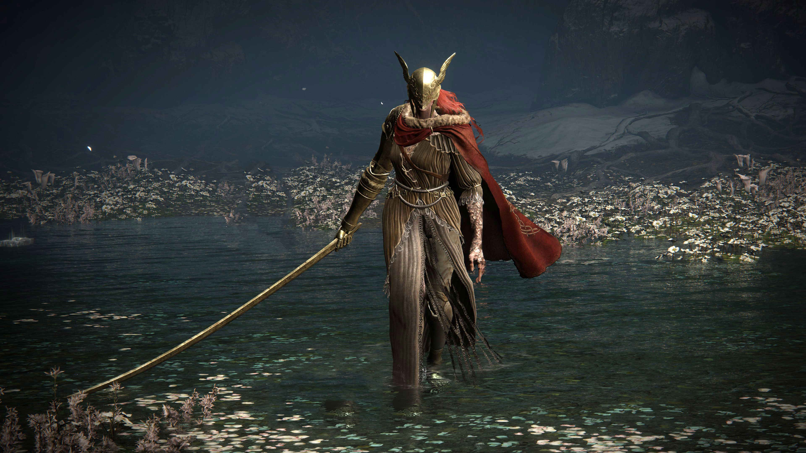
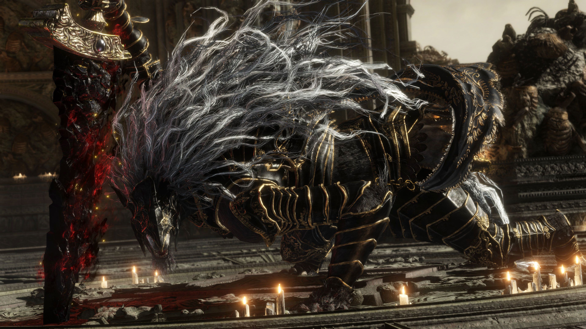
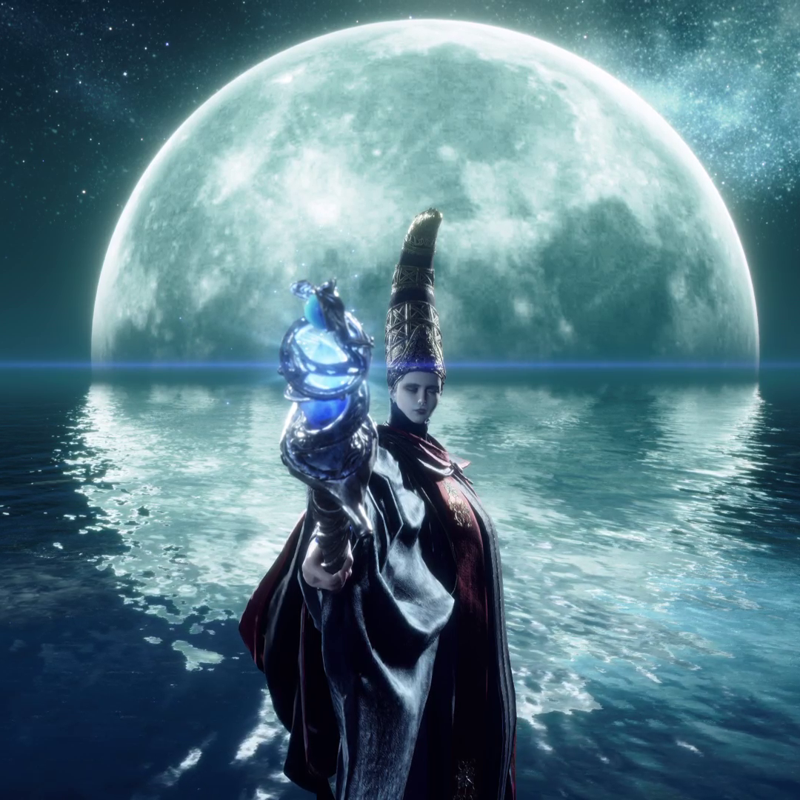

⚔️ Quem é Malenia
Malenia nasceu como uma semideusa, filha da rainha Queen Marika. Porém, desde o nascimento ela foi amaldiçoada pela Scarlet Rot, uma doença divina extremamente poderosa que lentamente destruía seu corpo. Mesmo com essa maldição:
Durante a guerra conhecida como The Shattering, Malenia enfrentou Starscourge Radahn em uma batalha lendária. Quando percebeu que não conseguiria vencer facilmente, ela liberou todo o poder da Scarlet Rot, criando uma explosão de podridão que devastou a região de Caelid e transformou o lugar em um território contaminado. Essa explosão também marcou o momento em que Malenia começou a se transformar na Deusa da Podridão (Goddess of Rot).
👑 Frase icônica dela
“I am Malenia, Blade of Miquella. And I have never known defeat.”
Essa frase ficou famosa porque ela diz isso toda vez que o jogador a enfrenta.

🗡️ Quem é Maliketh
Maliketh é o meio-irmão e guardião fiel da rainha Queen Marika. Ele foi escolhido para protegê-la e carregar um dos poderes mais perigosos do mundo: o Destined Death (Destino da Morte).
Esse poder fazia parte do Elden Ring, mas Marika removeu essa parte para impedir que os deuses pudessem morrer. Maliketh então ficou responsável por selar e proteger esse poder.
O roubo da Runa da Morte
Mesmo com a proteção de Maliketh, um fragmento da Runa da Morte foi roubado durante o evento conhecido como Night of the Black Knives.
🐾 A identidade secreta
Antes de revelar sua verdadeira forma, Maliketh aparece como Gurranq, Beast Clergyman, um sacerdote bestial que pede ao jogador Deathroot. Ele faz isso porque tenta conter e purificar o poder da morte dentro de si.

🌙 Quem é Rennala
Rennala era a rainha de Liurnia e também a grande mestre da magia da lua cheia. Ela governava os magos da famosa Academy of Raya Lucaria.
Ela ficou famosa por:
❤️ O relacionamento com Radagon
Durante uma guerra contra o Radagon, ele acabou se apaixonando por Rennala.
Os dois se casaram e tiveram três filhos:
Por um tempo, eles formaram uma das famílias mais poderosas do mundo.
💔 A queda de Rennala
Tudo mudou quando Radagon abandonou Rennala para voltar para Queen Marika e se tornar o Elden Lord.
Depois disso:
